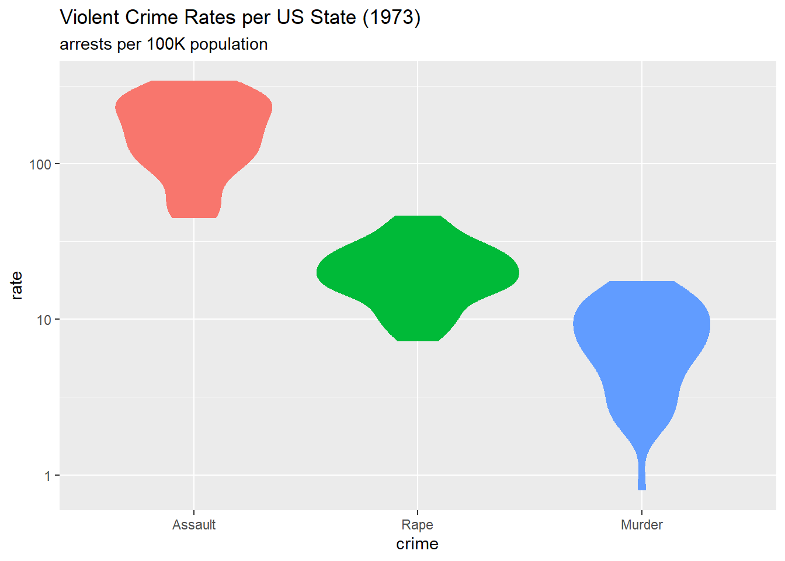
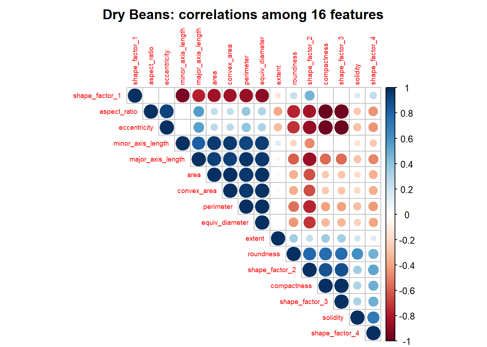
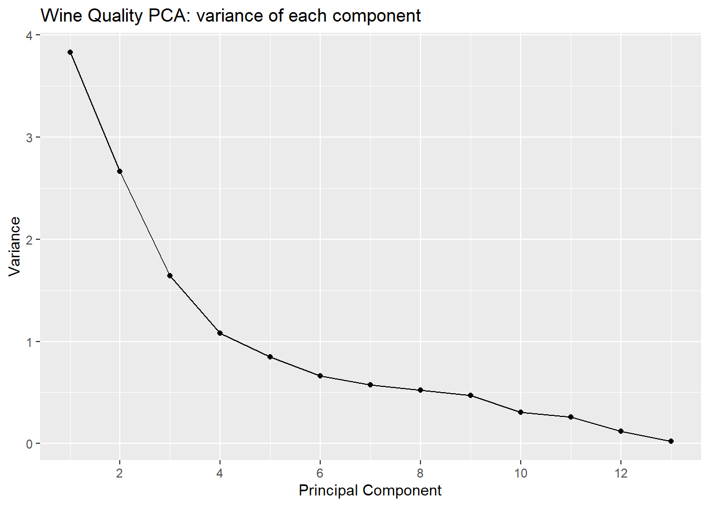
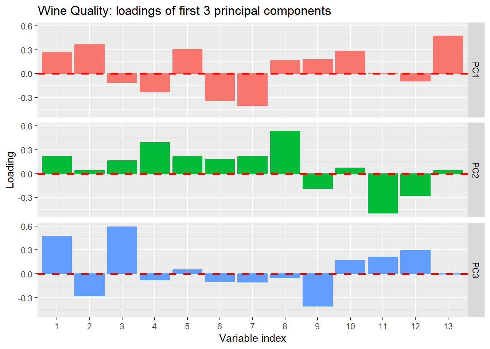

Describe the goal and method of Principal Component Analysis (PCA).
Compute principal components via eigendecomposition of the covariance matrix.
Interpret loadings as the contribution of original variables to each principal component.
Use the scree plot to determine how many components to retain.
Project high-dimensional data onto principal components for visualization.
Explain when one should simply center the data, and when one should also re-scale the data, prior to PCA.
Interpret principal components geometrically as directions of maximum variance.
Create and interpret biplots showing both observations and variable loadings.
Connect PCA to singular value decomposition (SVD).
This chapter addresses a fundamental question in data analysis: along which directions do the features of a data set vary most? The answer—principal component analysis (PCA)—is one of the most widely used techniques in statistical learning, providing both a method for dimension reduction and a lens for understanding the structure of high-dimensional data.
PCA connects to themes we have encountered throughout this book:
In Chapter 1 we introduced exploratory data analysis as a mindset devoted to understanding data before modeling it. PCA extends this mindset to high-dimensional settings where direct visualization is impossible.
In Chapter 3 we first confronted high-dimensional data, seeking structure through groupings of observations. PCA offers a complementary perspective: rather than grouping rows of the data matrix, it finds directions (linear combinations of columns) that capture the most variation.
In Chapter 7 we developed the geometry of linear regression as orthogonal projection onto a model-specified subspace. PCA employs the same geometric operation, but now the subspace is data-derived—we project onto directions determined by the data’s own structure.
In Chapter 6 we encountered the idea that information content relates to variability and uncertainty. PCA operationalizes a version of this insight: directions of high variance carry more information about differences among observations than directions of low variance.
A distinctive feature of PCA is that it admits a closed-form solution. Unlike clustering algorithms that iterate toward local optima, or the MCMC and EM methods we will encounter in later chapters, PCA solves directly for the optimal directions via eigenvalue decomposition. This places PCA in the classical tradition of analytical solutions—yet the problems it addresses are thoroughly modern, arising whenever we confront data sets with more features than we can visualize or easily interpret.
We begin with concrete examples that motivate dimension reduction, examine the geometry of PCA in low dimensions where visualization is possible, develop the algebraic machinery, and then return to richer examples where PCA reveals structure invisible to direct inspection.
Data analysis often begins with exploration, using tables and figures to learn about the data before formulating specific questions or hypotheses. The exploration becomes more challenging as the dimensions of the data increase. Here is a modest example.
McNeil (1977) reviewed the relationship among violent crime statistics per US state and the percentage of the population living in urban areas, variables described in Table 8.1 below. With just four variables, we can visualize the full data structure using scatter plot matrices (Figure 8.3). However, even this preliminary exploration reveals strong correlations among the three crime variables (Assault, Rape, Murder), suggesting that the data may effectively lie in fewer than four dimensions.
Show the code
st_wide_dscr |> dplyr::filter( var %in%c("Assault", "Rape", "Murder", "UrbanPop") ) |> dplyr::rename(variable = var, description = dscr) |> knitr::kable(caption ="Arrests per US State (1973)")
Table 8.1: Arrests per US State (1973)
Arrests per US State (1973)
variable
year
unit
description
Assault
1973
100K
assault arrests per 100K population
Rape
1973
100K
rape arrests per 100K population
Murder
1973
100K
murder arrests per 100K population
UrbanPop
1973
PCT
percent of population in urban areas
Figure 8.1 below (a so-called “violin” plot 1) shows the distribution across the 50 states of each type of violent crime. Rates are calculated as arrests per 100,000 population. The figure shows these rates on a \(\log_{10}\) scale, since assault arrests are many times more common than rape or murder arrests.
Show the code
g_arrests_violin <- arrests_long |> dplyr::filter(var !="UrbanPop") |> dplyr::mutate(var = forcats::as_factor(var)) |> dplyr::rename(crime = var) |> ggplot2::ggplot(mapping = ggplot2::aes(x = crime, y = rate, color = crime, fill = crime )) + ggplot2::geom_violin(show.legend =FALSE) + ggplot2::scale_y_log10() + ggplot2::labs(title ="Violent Crime Rates per US State (1973)", subtitle ="arrests per 100K population" )g_arrests_violin

Figure 8.1: Violent Crime Rates per US State (1973)
The figure above gives a view of three data variables—that is, three columns of the data matrix. Figure 8.2 below, a 3D scatterplot, gives a complementary view: each of the 50 states appears as a point whose coordinates are the respective arrest rates for assault, rape, and murder, with colour indicating UrbanPop, the percentage of the state’s population living in an urban area. Since individual states correspond to the rows of the data matrix, this figure provides a row-based perspective.
Show the code
g_arrests_3d_scatter <- arrests_wide |>plot_ly(x =~Assault, y =~Rape, z =~Murder,type ="scatter3d",mode ="markers",text =~arrests_wide$st_abb,marker =list(size =5,color =~UrbanPop,colorscale ="Viridis",showscale =TRUE,colorbar =list(title ="UrbanPop"))) |>layout(scene =list(xaxis =list(title ="Assault"),yaxis =list(title ="Rape"),zaxis =list(title ="Murder") ),title ="Violent Crime Rates in each US State (1973)")g_arrests_3d_scatter
Figure 8.2: Violent Crime Rates in each US State (1973)
Figure 8.3 below exemplifies a matrix of 2D scatter plots, a display method that accommodates more than 3 variables (but not many more, practically speaking).
Figure 8.3: Arrests Variables: Relationships and Correlations
This figure provides both column-based and row-based views of the data matrix. The correlation coefficients suggest redundancy: Murder and Assault are correlated at \(r = 0.80\), Murder and Rape at \(r = 0.56\), and Assault and Rape at \(r = 0.67\). Dimension reduction techniques can help us (1) visualize state-level crime patterns in fewer dimensions, (2) identify states with similar crime profiles, and (3) understand whether crime variation is driven by one dominant factor or multiple independent factors.
8.2.2 Dry Beans
Koklu and Ozkan (2020) published a data set of visual characteristics of dried beans “… in order to obtain uniform seed classification. For the classification model, images of 13,611 grains of 7 different registered dry beans were taken with a high-resolution camera.” The resulting data set contains 16 morphological features extracted from each bean image, including measures of area, perimeter, compactness, length, width, and various shape factors.
The classification goal is to predict bean variety from these morphological measurements. Successful classification could improve sorting systems in agricultural processing. However, many of these 16 features are inherently redundant: area and perimeter are strongly correlated, as are various length and width measurements. Dimension reduction can reveal whether bean varieties differ primarily in size, shape, or both, and whether a smaller subset of derived features might achieve comparable classification accuracy with greater interpretability.
The data are available in R package beans, containing a data matrix (tibble) of dimension \(13611 \times 17\). The last column is the response variable class that assigns one of seven types of bean to each bean image. The remaining 16 columns are morphological measurements.
Kuhn and Silge (2022) develop and evaluate classification models for these data. They begin by examining the correlation coefficients for each pair of the 16 feature vectors. Figure 8.4 follows their example.
beans_cor_mat <- beans::beans |> dplyr::select(- class) |> stats::cor()beans_cor_mat |> corrplot::corrplot(type ="upper", order ="hclust",tl.cex =0.6,title ="Dry Beans: correlations among 16 features", mar =c(0, 0, 2, 0))

Figure 8.4: Dry Beans: correlations among 16 features
The figure reveals substantial correlation structure: many features are highly correlated (dark blue) or anti-correlated (dark red). The hierarchical clustering used to order features has grouped related measurements together. This pattern suggests that the effective dimensionality of the data is much lower than 16.
Cortez et al. (2009) published a data set containing physicochemical measurements and quality ratings for Portuguese wines. The data set includes both red and white wines, with 11 chemical properties measured for each wine and a quality score assigned by expert tasters.
Table 8.2: Wine Quality: chemical properties (11) and other variables (2)
Wine Quality: chemical properties (11) and other variables (2)
variable
type
description
fixed acidity
numeric
tartaric acid (g/dm³)
volatile acidity
numeric
acetic acid (g/dm³)
citric acid
numeric
citric acid (g/dm³)
residual sugar
numeric
residual sugar (g/dm³)
chlorides
numeric
sodium chloride (g/dm³)
free sulfur dioxide
numeric
free SO₂ (mg/dm³)
total sulfur dioxide
numeric
total SO₂ (mg/dm³)
density
numeric
density (g/cm³)
pH
numeric
pH
sulphates
numeric
potassium sulphate (g/dm³)
alcohol
numeric
alcohol (% vol)
quality
integer
quality rating (0-10)
color
character
red or white
The 11 chemical properties are constrained by fermentation chemistry—they are not independent measurements of unrelated quantities. With 6,497 observations, the data set is large enough to support reliable estimation, but the correlations among features suggest that fewer than 11 dimensions may suffice to capture the essential variation.
8.3 The Curse of Dimensionality
The examples above have \(d \le 16\) features—high enough to prevent direct visualization but modest by modern standards. Contemporary data sets routinely have hundreds, thousands, or even millions of features. Genomic studies measure expression levels of tens of thousands of genes; image analysis treats each pixel as a feature; natural language processing represents documents in vocabularies of hundreds of thousands of terms.
Several challenges arise when \(d\) is large, particularly when \(d \gg n\) (more features than observations):
Visualization: We cannot plot points in \(d\) dimensions to explore patterns or detect outliers.
Over-fitting: With \(d \gg n\), infinitely many coefficient vectors produce identical predictions on the training data. Model selection becomes impossible without regularization.
Computation: Storing and manipulating a \(d \times d\) covariance matrix becomes prohibitively expensive.
Geometric pathology: Our intuition, grounded in two and three dimensions, fails in high-dimensional spaces.
In 1957 Richard Bellman characterised these challenges as “the curse of dimensionality” (Bellman 1957).
To illustrate the geometric pathology, consider a unit hypercube \([0,1]^d\) containing the largest possible inscribed ball. The ratio \(r(d)\) of their volumes shrinks dramatically: \(r(3) \approx 0.52\), \(r(10) \approx 0.0025\), and \(r(100) \approx 2 \times 10^{-70}\). In high dimensions, randomly generated points within the cube land overwhelmingly far from the centre.
Yet Donoho (2000) identifies an opportunity within the curse: while randomly generated data in high dimensions behaves pathologically, actual data tend to be more coherent. Consider the example data sets:
US Arrests: The three crime variables are highly correlated; they do not independently span 3D space.
Dry Beans: The 16 shape measurements reflect underlying bean geometry.
Wine Quality: The 11 chemical properties are constrained by fermentation chemistry.
In each case, the data likely occupy a much lower-dimensional structure within the high-dimensional feature space. If we can identify this structure, we are likely to improve subsequent statistical modeling—by reducing noise, mitigating over-fitting, and enabling visualization.
This insight motivates dimension reduction: we seek to discover the low-dimensional structure that real data often possess. PCA is the foundational method for this task when the structure is approximately linear.
8.4 Geometric Intuition
Before developing the algebra of PCA, we build geometric intuition using examples where visualization is possible.
Figure 8.5: Principal Components: (father, son) centred heights
The figure shows two principal components, \((c_1, c_2)\), as respective orange and purple lines perpendicular to one another.
The orange line \((c_1)\) points in the direction where the data varies most. Geometrically, this is the direction such that projecting all points onto this line yields the maximum spread (variance) of projected values. The purple line \((c_2)\) is perpendicular to \(c_1\) and captures the maximum remaining variance. Together, the two principal components form a rotated coordinate system aligned with the data’s natural variation.
This geometric picture illuminates the connection to Chapter 7. In regression, we project the response vector onto the column space of the feature matrix—a subspace specified by the model of a linear response. In PCA, there is no response variable; instead we project observations onto a subspace determined by the covariance structure of the feature matrix. Both operations are orthogonal projections; they differ in how the target subspace is used.
We now revisit datasets::USArrests to illustrate PCA in three dimensions. A practical goal might be to define a single index of violent crime from the three crime types.
The arrest rates for assault, rape, and murder are on quite different scales. Without adjustment, assault rates would dominate total variance and consequently the determination of principal components. As an initial adjustment, we transform each rate to a z-score by subtracting the mean and dividing by the standard deviation (calculated across the 50 states).
Figure 8.6 is a 3D scatterplot of these z-scores, also showing the three principal components \((c_1, c_2, c_3)\) in respective colours: orange, purple, and green.
Show the code
g_arm_pca <-plot_ly(x = z_arrests_tbl$z_assault, y = z_arrests_tbl$z_rape, z = z_arrests_tbl$z_murder, type ="scatter3d",mode ="markers",text = z_arrests_tbl$st_abb, marker =list(size =4,color ="steelblue",opacity =0.7 ),name ="State")for (i in1:3) { g_arm_pca <- g_arm_pca |>add_trace(x =c(0, arm_pca_end_pt_mat["z_assault", i]), y =c(0, arm_pca_end_pt_mat["z_rape", i]), z =c(0, arm_pca_end_pt_mat["z_murder", i]), type ="scatter3d",mode ="lines",line =list(width =6, color = pc_clr[i]),name =paste0("PC", i),showlegend =FALSE,inherit =FALSE )}g_arm_pca <- g_arm_pca |>layout(scene =list(xaxis =list(title ="z_Assault"),yaxis =list(title ="z_Rape"),zaxis =list(title ="z_Murder"),aspectmode ="cube" ),title ="US Arrest Z-scores: Principal Components")g_arm_pca
Figure 8.6: US Arrest Z-scores: Principal Components
The first principal component \((c_1)\) is a promising representative of overall violent crime level. As Figure 8.7 shows, the coefficient (loading) of each z-score variable on \(c_1\) is positive. A violent crime index aligned with \(c_1\) would respond to an increase in any of the three crime types. 2
We want any crime index to account for a substantial proportion of total variation. Since the z-scores are constrained to have unit variance, total variation among the three z-scores is 3. Table 8.3 shows how this variation is distributed across principal components.
Table 8.3: Arrest z-scores: variance of principal components
Arrest z-scores: variance of principal components
id
sd
variance
var_pct
PC1
1.50
2.40
79.0
PC2
0.68
0.46
15.0
PC3
0.43
0.18
6.1
The first principal component accounts for 79 percent of total variation—a strong candidate for a violent crime index. The second component captures differences between states with high rape rates versus high murder rates (note the opposite signs of these loadings in Figure 8.7), accounting for an additional 15 percent.
8.5 The Algebra of PCA
We now develop the mathematical framework underlying the geometric intuition. The treatment here presents the main ideas; a more detailed derivation appears in Section 8.14.
8.5.1 Notation and Setup
Let \(X_{\bullet, \bullet}\) denote the \(n \times d\) feature matrix with observations in rows and features in columns. We assume \(X_{\bullet, \bullet}\) has been centred: the mean of each column is zero. This assumption simplifies notation without loss of generality, since we can always subtract column means before analysis.
With centring, the \(d \times d\) matrix \(X_{\bullet, \bullet}^\top X_{\bullet, \bullet}\) is proportional to the sample covariance matrix:
The first principal component \(c_{\bullet, 1}\) is a linear combination of the columns of \(X_{\bullet, \bullet}\) with coefficient vector \(v_{\bullet, 1}\):
The coefficients \((v_{1,1}, \ldots, v_{d,1})\) are called the loadings of the features onto the first principal component.
Of all unit vectors \(v_\bullet \in \mathbb{R}^d\), the vector \(v_{\bullet, 1}\) is distinguished by maximising the variance of the resulting linear combination:
This optimisation problem has a closed-form solution: \(v_{\bullet, 1}\) is the eigenvector of \(X_{\bullet, \bullet}^\top X_{\bullet, \bullet}\) corresponding to its largest eigenvalue \(\sigma_1^2\). That is:
The eigenvalue \(\sigma_1^2\) equals the variance of \(c_{\bullet, 1}\) (up to the factor \(n-1\)).
8.5.3 Subsequent Principal Components
The remaining principal components are defined analogously. The \(k\)th principal component \(c_{\bullet, k}\) maximises variance subject to being orthogonal to all previous components:
The coefficient vectors \((v_{\bullet, 1}, \ldots, v_{\bullet, d})\) are the eigenvectors of \(X_{\bullet, \bullet}^\top X_{\bullet, \bullet}\), ordered by decreasing eigenvalue. Since \(X_{\bullet, \bullet}^\top X_{\bullet, \bullet}\) is symmetric and positive semi-definite, these eigenvectors form an orthonormal basis for \(\mathbb{R}^d\).
If the feature matrix has rank \(r \le \min(n, d)\), then only the first \(r\) eigenvalues are positive. The first \(r\) principal components span the same subspace as the columns of \(X_{\bullet, \bullet}\).
8.5.4 Scores
The scores of the \(k\)th principal component are the elements of vector \(c_{\bullet, k}\). The \(i\)th score is:
Geometrically, this is the projection of the \(i\)th observation onto the direction defined by \(v_{\bullet, k}\). The collection of scores provides coordinates for observations in the principal component space.
8.5.5 The Closed-Form Solution
A key feature of PCA is that it admits an exact, analytical solution. We do not iterate toward an optimum; we compute eigenvalues and eigenvectors of a symmetric matrix. This contrasts with:
Clustering algorithms (e.g., \(k\)-means) that iterate toward local optima
Topic models that require variational inference or MCMC sampling
Neural networks trained by gradient descent
The availability of a closed-form solution reflects the mathematical structure of the problem: maximising a quadratic form (variance) subject to a quadratic constraint (unit norm) yields a linear eigenvalue problem. This places PCA in the tradition of classical mathematical analysis, even as it addresses modern high-dimensional challenges.
8.6 Computation
Two computational approaches yield principal components:
Eigenvalue decomposition (EVD): Compute \(X_{\bullet, \bullet}^\top X_{\bullet, \bullet}\) and find its eigenvalues and eigenvectors.
Singular value decomposition (SVD): Factor the feature matrix directly as \(X_{\bullet, \bullet} = U \Sigma V^\top\).
The SVD approach is generally preferred for numerical stability and efficiency, particularly when \(d\) is large. The relationship between the two approaches is:
The right singular vectors (columns of \(V\)) are the principal component directions \(v_{\bullet, k}\)
The singular values (diagonal of \(\Sigma\)) are \(\sigma_k\), the square roots of the eigenvalues
The left singular vectors (columns of \(U\)), scaled by singular values, give the scores
In R, stats::prcomp() uses SVD internally. The function returns:
rotation: the matrix of loadings (columns are \(v_{\bullet, k}\))
x: the matrix of scores (columns are \(c_{\bullet, k}\))
sdev: the standard deviations \(\sigma_k\)
Show the code
# Basic PCA workflow in Rpca_result <-prcomp(X, center =TRUE, scale. =TRUE)# Loadings (principal component directions)pca_result$rotation# Scores (observations in PC space)pca_result$x# Variance explainedsummary(pca_result)
The scale. argument controls whether features are standardised to unit variance before PCA. When features are measured on different scales (as in our examples), standardisation is typically appropriate.
8.7 Interpretation and Diagnostics
8.7.1 Scree Plots
A scree plot displays the variance (or proportion of variance) explained by each principal component. The name alludes to the hope of seeing a “cliff” for the first few components followed by “scree” (rubble) for the remainder, suggesting a natural truncation point.
Figure 8.8 illustrates a scree plot for the wine quality data.
Show the code
g_wq_pc_variance <- wq_pc_stats_tbl |> dplyr::rename(PC_index = idx, variance = var ) |> ggplot2::ggplot(mapping = ggplot2::aes(x = PC_index, y = variance )) + ggplot2::geom_line() + ggplot2::geom_point() + ggplot2::scale_x_continuous(breaks =seq(0, 13, by =2) ) + ggplot2::labs(title ="Wine Quality PCA: variance of each component",x ="Principal Component",y ="Variance" )g_wq_pc_variance

Figure 8.8: Wine Quality PCA: variance of each component (scree plot)
Table 8.4 provides numeric detail, including cumulative variance explained.
Show the code
wq_pc_stats_tbl |> dplyr::mutate(cum_var_pct =cumsum(var_pct) ) |> dplyr::rename(PC_index = idx, variance = var, ) |> knitr::kable(caption ="Wine Quality PCA: variance of each component", digits =2 )
Table 8.4: Wine Quality PCA: variance of each component
Wine Quality PCA: variance of each component
PC_index
id
sd
variance
var_pct
cum_var_pct
1
PC1
1.96
3.83
29.49
29.49
2
PC2
1.63
2.66
20.48
49.98
3
PC3
1.28
1.64
12.63
62.60
4
PC4
1.04
1.08
8.31
70.92
5
PC5
0.92
0.85
6.54
77.45
6
PC6
0.81
0.66
5.08
82.54
7
PC7
0.76
0.57
4.41
86.94
8
PC8
0.72
0.52
4.01
90.95
9
PC9
0.69
0.47
3.62
94.57
10
PC10
0.55
0.31
2.35
96.92
11
PC11
0.51
0.26
1.98
98.90
12
PC12
0.35
0.12
0.92
99.82
13
PC13
0.15
0.02
0.18
100.00
The first three components capture about 63 percent of total variance; six components are needed to reach 83 percent. There is no dramatic “elbow”—the variance declines gradually—suggesting that the data’s structure is distributed across multiple directions rather than concentrated in a few.
8.7.2 Loading Plots
Loading plots display the coefficients that define each principal component, helping interpret what each component “means” in terms of original features.
g_wq_loadings <- wq_rot_long |> dplyr::filter(i_pc <=3) |> dplyr::mutate(variable_index = forcats::as_factor(i_var)) |> ggplot2::ggplot(mapping = ggplot2::aes(x = variable_index, y = coeff, color = pc, fill = pc )) + ggplot2::geom_col(show.legend =FALSE ) + ggplot2::facet_grid(rows =vars(pc)) + ggplot2::geom_hline(yintercept =0, color ="red", linetype =2, linewidth =1 ) + ggplot2::labs(title ="Wine Quality: loadings of first 3 principal components",x ="Variable index",y ="Loading" )g_wq_loadings

Figure 8.9: Wine Quality: loadings of first 3 principal components
Interpretation requires knowing which variable corresponds to each index. The strong loading of variable 13 (is_red) on PC1 suggests that the first component largely captures the difference between red and white wines.
8.7.3 Biplots
A biplot displays both scores (observations) and loadings (variables) in the same plot, typically using the first two principal components. Observations appear as points; variables appear as vectors from the origin. The angle between variable vectors approximates their correlation; the length of a vector indicates how well that variable is represented in the 2D projection.
Figure 8.10: Wine Quality PCA: biplot of PC1 vs PC2
The biplot reveals a striking pattern: observations separate into two clusters along PC1, corresponding almost perfectly to red versus white wines. This confirms the loading plot’s suggestion that PC1 captures wine colour.
8.7.4 Information-Theoretic Interpretation
The connection between variance and information provides another perspective on PCA. High variance directions carry more information about differences among observations; low variance directions may represent noise or measurement error.
When we truncate to \(r\) principal components, we retain the proportion \(\sum_{k=1}^r \sigma_k^2 / \sum_{k=1}^d \sigma_k^2\) of total variance. From an information-theoretic standpoint, this represents the proportion of “signal” we preserve. The discarded components may contain some signal, but they are increasingly dominated by noise as we move to smaller eigenvalues.
This interpretation connects to Chapter 6: variance, like entropy, measures spread or uncertainty. Directions of high variance are directions where observations differ most—precisely the directions that are informative for distinguishing among observations.
8.8 Detailed Example: Wine Quality
We now present a complete PCA workflow for the wine quality data, illustrating the methods developed above.
8.8.1 Data Preparation
The wine quality data contain 11 numeric chemical properties, plus wine colour and quality rating. We re-code colour as a binary indicator is_red and include it among the features for PCA.
wq_smy |> knitr::kable(caption ="Wine quality variables: mean and standard deviation", digits =2)
Table 8.5: Wine quality variables: mean and standard deviation
Wine quality variables: mean and standard deviation
i_var
variable
mean
sd
1
fixed acidity
7.22
1.30
2
volatile acidity
0.34
0.16
3
citric acid
0.32
0.15
4
residual sugar
5.44
4.76
5
chlorides
0.06
0.04
6
free sulfur dioxide
30.53
17.75
7
total sulfur dioxide
115.74
56.52
8
density
0.99
0.00
9
pH
3.22
0.16
10
sulphates
0.53
0.15
11
alcohol
10.49
1.19
12
quality
5.82
0.87
13
is_red
0.25
0.43
The standard deviations vary considerably across features. Total sulfur dioxide has a standard deviation of 56, while density has a standard deviation of 0.003. Without standardisation, the sulfur dioxide variables would dominate the principal components simply due to their scale. We therefore standardise all features to z-scores before conducting PCA.
Table 8.6: Wine Quality PCA: wine colour versus PC1 cluster
Wine Quality PCA: wine colour versus PC1 cluster
class
white
red
1
4870
13
2
28
1586
The correspondence is nearly perfect: the unsupervised PCA, with no knowledge of wine colour labels, has discovered the red/white distinction as the primary axis of variation.
8.8.3 Summary of Findings
The PCA of wine quality data reveals:
The 13 features require 6 or more principal components for adequate representation, capturing about 83 percent of total variance. The first 3 components capture only 63 percent.
The first principal component corresponds almost perfectly to wine colour. This was discovered purely from the covariance structure, without using color labels.
The discovery emerged through visualization (biplot) and was confirmed quantitatively (Gaussian mixture model, cross-tabulation). This illustrates the EDA philosophy: PCA enables exploration that reveals structure.
8.9 PCA and the Singular Value Decomposition
The singular value decomposition (SVD) provides both the computational engine for PCA and a deeper understanding of what PCA accomplishes.
8.9.1 The SVD Factorisation
Any \(n \times d\) matrix \(X_{\bullet, \bullet}\) can be factored as:
\[
X_{\bullet, \bullet} = U \Sigma V^\top
\qquad(8.7)\]
where:
\(U\) is an \(n \times n\) orthogonal matrix (columns are left singular vectors)
\(\Sigma\) is an \(n \times d\) diagonal matrix (diagonal entries are singular values\(\sigma_1 \ge \sigma_2 \ge \cdots \ge 0\))
\(V\) is a \(d \times d\) orthogonal matrix (columns are right singular vectors)
8.9.2 Connection to PCA
The right singular vectors \(v_{\bullet, k}\) (columns of \(V\)) are exactly the principal component directions—the eigenvectors of \(X_{\bullet, \bullet}^\top X_{\bullet, \bullet}\). The singular values \(\sigma_k\) are the square roots of the eigenvalues.
The principal component scores can be computed as:
where \(r = \text{rank}(X_{\bullet, \bullet})\). Truncating this sum to \(r' < r\) terms yields the best rank-\(r'\) approximation to \(X_{\bullet, \bullet}\) in the least-squares sense (Eckart-Young theorem).
This truncated SVD is precisely what PCA accomplishes: projecting onto the first \(r'\) principal components gives the best \(r'\)-dimensional representation of the data.
A detailed derivation of the SVD and its connection to PCA appears in Section 8.14.
8.10 Limitations and Extensions
8.10.1 Linear Structure Only
PCA finds linear structure: the principal components are linear combinations of features, and the reduced representation is a linear projection. When data lie on or near a curved manifold, PCA may fail to capture the underlying structure.
Consider data distributed along a spiral or S-curve in 3D space. The data are intrinsically one-dimensional (position along the curve), but PCA will find directions of maximum variance that cut across the curve rather than along it.
Nonlinear methods such as kernel PCA, t-SNE, and UMAP address this limitation, though at the cost of interpretability and computational complexity. These methods are surveyed in Section 9.10.
8.10.2 Unsupervised: Labels Are Ignored
PCA maximises variance without reference to any response variable. The directions of maximum variance may not be the directions most useful for prediction or classification.
For example, in a two-class problem, the classes might differ primarily along a direction of low overall variance. PCA would rank this direction last, potentially discarding the very information needed for classification.
Linear Discriminant Analysis (LDA), developed in Chapter 9, addresses this by seeking directions that maximise between-class variance relative to within-class variance. LDA is the supervised counterpart to PCA.
8.10.3 When Variance Is Uninformative
PCA assumes that variance indicates importance. This assumption can fail:
When features have been scaled inappropriately, variance may reflect measurement units rather than signal.
When noise is heteroscedastic, high-variance directions may be dominated by noise rather than signal.
When all directions have similar variance (spherical data), PCA provides no natural ordering.
Careful preprocessing—centering, scaling, possibly transforming—is essential for meaningful PCA results.
8.11 Summary
Principal Component Analysis addresses the question: along which directions do the features vary most? The answer emerges from the eigen-decomposition of the feature covariance matrix, or equivalently, from the singular value decomposition of the centred feature matrix.
8.11.1 Key Results
Principal components are linear combinations of original features, defined by eigenvectors of the covariance matrix. The first component captures maximum variance; subsequent components capture maximum variance orthogonal to those already found.
Dimension reduction is achieved by projecting observations onto the first \(r' < d\) principal components. The proportion of variance retained quantifies information preservation.
The SVD provides both the computational method and a theoretical framework. The right singular vectors are principal component directions; singular values measure the importance of each direction.
Closed-form solution: Unlike iterative methods for clustering or topic modelling, PCA solves an eigenvalue problem exactly. This reflects the quadratic structure of variance maximisation.
8.11.2 Connections to Book Themes
PCA exemplifies several themes developed throughout this book:
Geometric thinking: PCA is fundamentally about orthogonal projection onto data-determined subspaces. The geometry of inner products, norms, and perpendicularity underlies both the theory and interpretation.
Closed-form versus algorithmic: PCA represents the classical tradition of analytical solutions. In Chapter 3 we encountered \(k\)-means, which iterates toward local optima. In subsequent chapters we will meet MCMC and EM, general algorithmic strategies for problems beyond analytical reach. PCA’s closed-form solution is available precisely because variance maximisation with a norm constraint yields a linear eigenvalue problem.
Information and variance: Directions of high variance carry information about differences among observations. Truncating to the first few principal components preserves the most informative directions—a connection to Chapter 6.
Supervised versus unsupervised: PCA is unsupervised; it finds structure in features without reference to any response. Chapter 9 develops LDA as the supervised counterpart, seeking directions that separate known classes.
8.11.3 Looking Ahead
PCA provides a foundation for dimension reduction in subsequent chapters. In Chapter 9, we develop Linear Discriminant Analysis for supervised settings. In Part III (Text Data), dimension reduction techniques will help represent documents in manageable spaces. In Part IV (Time Series), spectral methods will decompose temporal variation. Throughout, the geometric intuition developed here—projection onto informative subspaces—will guide our understanding.
8.12 Exercises
8.12.1 Computational Exercises
Exercise 8.1 (PCA by hand) Consider the following \(4 \times 2\) data matrix with observations in rows:
Centre the matrix by subtracting the column means.
Compute \(X^\top X\) (where \(X\) now denotes the centred matrix) and find its eigenvalues and eigenvectors.
What proportion of total variance is captured by the first principal component?
Verify your results using prcomp() in R.
Exercise 8.2 (PCA on US Arrests data) Using the full USArrests data set (all four variables):
Perform PCA with and without scaling. How do the results differ?
Interpret the first two principal components. What do they represent in terms of the original variables?
Create a biplot. Which states appear as outliers, and why?
Exercise 8.3 (Wine quality PCA) Using the wine quality data:
Perform PCA on the 11 chemical properties only (excluding colour and quality). How many components are needed to explain 90% of variance?
Colour points in a PC1-PC2 biplot by wine quality rating. Is quality associated with the principal components?
Compare loadings when colour is included versus excluded as a feature.
8.12.2 Conceptual Exercises
Exercise 8.4 (Scaling decisions) A researcher measures height (in centimetres) and weight (in kilograms) for a sample of individuals and performs PCA.
Without scaling, which variable will dominate the first principal component? Why?
The researcher converts height to metres. How does this change the PCA results?
What general principle should guide scaling decisions in PCA?
Exercise 8.5 (PCA versus regression) Both PCA and linear regression involve projections. Explain:
What determines the subspace onto which we project in regression versus PCA?
Why might directions of maximum variance differ from directions useful for prediction?
Give an example where PCA would miss structure that regression would find.
Exercise 8.6 (Geometric interpretation) For a \(2 \times 2\) correlation matrix with correlation \(\rho\) between two standardised variables:
Find the eigenvalues and eigenvectors as functions of \(\rho\).
What happens to the principal components as \(\rho \to 1\)? As \(\rho \to 0\)?
Interpret geometrically: what does the “shape” of the data cloud look like in each case?
8.12.3 Theoretical Exercises
Exercise 8.7 (Variance maximisation) Prove that the first principal component direction \(v_{\bullet, 1}\) maximises \(var(X_{\bullet, \bullet} v_\bullet)\) subject to \(\|v_\bullet\| = 1\) by:
Writing the variance as a quadratic form \(v_\bullet^\top A v_\bullet\) for an appropriate matrix \(A\).
Using Lagrange multipliers to find the stationary points.
Showing that the maximum occurs at the eigenvector corresponding to the largest eigenvalue.
Exercise 8.8 (Orthogonality of principal components) Prove that if \(v_{\bullet, j}\) and \(v_{\bullet, k}\) are eigenvectors of \(X_{\bullet, \bullet}^\top X_{\bullet, \bullet}\) with distinct eigenvalues, then the corresponding principal components \(c_{\bullet, j} = X_{\bullet, \bullet} v_{\bullet, j}\) and \(c_{\bullet, k} = X_{\bullet, \bullet} v_{\bullet, k}\) are orthogonal.
Exercise 8.9 (Total variance) Show that the total variance of the features equals the sum of eigenvalues:
where \(\sigma_k^2\) are the eigenvalues of the covariance matrix. What does this imply about the proportion of variance explained by the first \(r\) principal components?
This appendix provides a detailed derivation of the singular value decomposition and its connection to principal components. The treatment follows the development in Section 8.5 but with fuller mathematical detail.
8.14.1 Setup
Let \(X_{\bullet, \bullet}\) denote the centred \(n \times d\) feature matrix. We seek orthogonal projections that best approximate the rows of \(X_{\bullet, \bullet}\) in a lower-dimensional subspace.
For any orthogonal projection \(P\) from \(\mathbb{R}^d\) to a subspace, define the loss function:
The first term is fixed (total variance of the data). Thus minimising loss is equivalent to maximising the projected variance \(\sum_{i=1}^n \| P x_{i, \bullet} \|^2\).
8.14.3 One-Dimensional Projection
For projection onto a line spanned by unit vector \(v_\bullet\), the projection matrix is \(P = v_\bullet v_\bullet^\top\), and:
This is a quadratic form in \(v_\bullet\). Subject to \(\| v_\bullet \| = 1\), this is maximised when \(v_\bullet\) is the eigenvector of \(X_{\bullet, \bullet}^\top X_{\bullet, \bullet}\) corresponding to its largest eigenvalue.
8.14.4 Sequential Construction
Having found \(v_{\bullet, 1}\), we seek \(v_{\bullet, 2}\) orthogonal to \(v_{\bullet, 1}\) that maximises variance in the orthogonal complement. This is the eigenvector corresponding to the second-largest eigenvalue.
Continuing, we obtain an orthonormal sequence \((v_{\bullet, 1}, \ldots, v_{\bullet, r})\) where \(r = \text{rank}(X_{\bullet, \bullet})\). The \(k\)th principal component is:
with variance \(\sigma_k^2\), the \(k\)th eigenvalue.
8.14.5 The SVD
Define unit vectors \(u_{\bullet, k} = c_{\bullet, k} / \sigma_k\). These are orthonormal (proof: use orthogonality of principal components). Extend both \((v_{\bullet, k})\) and \((u_{\bullet, k})\) to orthonormal bases for \(\mathbb{R}^d\) and \(\mathbb{R}^n\) respectively.
Forming matrices \(V = (v_{\bullet, 1}, \ldots, v_{\bullet, d})\) and \(U = (u_{\bullet, 1}, \ldots, u_{\bullet, n})\), we have:
\[
X_{\bullet, \bullet} = U \Sigma V^\top
\qquad(8.14)\]
where \(\Sigma\) is the \(n \times d\) matrix with \(\sigma_k\) on the diagonal and zeros elsewhere.
This factorisation—the singular value decomposition—encapsulates all the information needed for PCA: the directions (\(V\)), the variances (\(\Sigma^2\)), and the scores (\(U\Sigma\)).
Bellman, Richard Ernest. 1957. Dynamic Programming. Princeton University Press.
Cortez, P., Antonio Luíz Cerdeira, Fernando Almeida, Telmo Matos, and José Reis. 2009. “Modeling Wine Preferences by Data Mining from Physicochemical Properties.”Decis. Support Syst. 47: 547–53. https://api.semanticscholar.org/CorpusID:2996254.
Koklu, Mehmet, and Ibrahim A Ozkan. 2020. “Multiclass Classification of Dry Beans Using Computer Vision and Machine Learning Techniques.”Computers and Electronics in Agriculture 174: 105507.
Kuhn, Max, and Julia Silge. 2022. Tidy Modeling with r. O’Reilly Media. https://www.tmwr.org/.
McNeil, Donald R. 1977. Interactive Data Analysis: A Practical Primer. New York, USA: John Wiley & Sons.
Constructing an actual policy index would require more than PCA, but PCA provides a principled starting point for understanding the correlation structure.↩︎